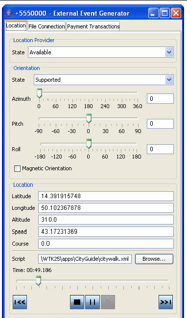
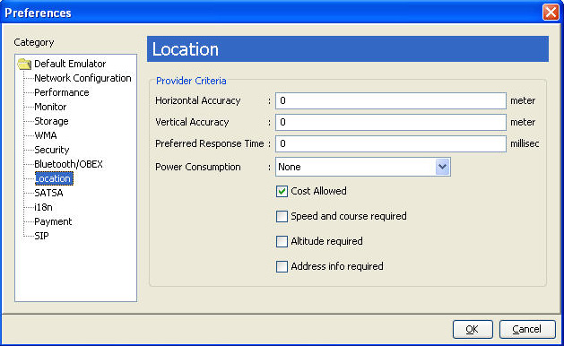
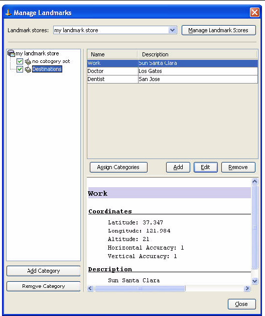
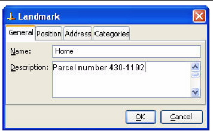

| Sun Java Wireless Toolkit for CLDC User's Guide |
| Sun Java Wireless Toolkit for CLDC User's Guide |
| C H A P T E R 13 |
|
Using the Location API |
The JSR 179 Location API gives applications the opportunity to use a device's location capabilities. For example, some devices include Global Positioning System (GPS) hardware. Other devices might be able to receive location information from the wireless network. The Location API provides a standard interface to location information, regardless of the underlying technique.
In the Location API, a location provider encapsulates a positioning method and supplies information about the device's location. The application requests a provider by specifying required criteria, such as the desired accuracy and response time. If an appropriate implementation is available, the application can use it to obtain information about the device's physical location.
The Sun JavaTM Wireless Toolkit for CLDC includes a simulated location provider. You can use the emulator's External Events window to specify where the emulator should think it is located. In addition, you can configure the properties of the provider itself, and you can manage a database of landmarks.
You can specify the simulated location of the emulator while it is running. To do this, choose MIDlet > External Events from the emulator window's menu. Click the Location tab. See FIGURE 13-1.
FIGURE 13-1 Controlling Location in the Emulator

In the Location area of the tab, you can fill in values for the latitude, longitude, altitude, speed, and course. Applications that use the Location API can retrieve these values as the location of the emulator.
For more elaborate testing, you can set up a location script that describes motion over time. Location scripts are XML files consisting of a list of locations, called waypoints, and associated times. The Sun JavaTM Wireless Toolkit for CLDC determines the current location of the emulator by interpolating between the points in the location script. Here, for example, is a simple location script that specifies a starting point (time="0") and moves to a new point in ten seconds:
<waypoints>
<waypoint time="0"
latitude="14" longitude="50" altitude="310" />
<waypoint time="10000"
latitude="14.5" longitude="50.1" altitude="215" />
</waypoints>
The altitude measurement is in meters, and the time values are in milliseconds.
Use a text editor to create your location script. You can load it into the external event window by pressing the Browse button next to the Script field. Immediately below are controls for playing, pausing, stopping, and moving to the beginning and end of the location script. You can also drag the time slider to a particular point.
Some devices are also capable of measuring their orientation. To make this kind of information available to your application, change the State field in the Orientation box to Supported and fill in values for azimuth, pitch, and roll. The Magnetic Orientation checkbox indicates whether the azimuth and pitch measurements are relative to the Earth's magnetic field or relative to true north and gravity.
To test how your application handles unexpected conditions, try changing the State field in the Location Provider box to Temporarily Unavailable or Out of Service. When your application attempts to retrieve the emulator's location, an exception is thrown and you can see how your application responds.
You can configure the properties of the Sun JavaTM Wireless Toolkit for CLDC's location provider using the preferences. In the user interface, choose Edit > Preferences and click Location.
FIGURE 13-2 Configuring the Location Provider

The fields in the Location tab enable you to specify the properties of the toolkit's built-in location provider. The properties you specify in the preferences correspond to the Criteria class applications use to request a location provider.
The Sun JavaTM Wireless Toolkit for CLDC emulator includes a landmark store system, just like many real devices. A landmark store is a collection of places with associated names and other information. To manage landmark stores, choose File > Utilities from the menu, select Manage Landmarks, and press Launch.

The landmark manager shows the content of a single landmark store. JSR 179 requires a minimum of one landmark store, and it is referred to as the default store. To select a different landmark store or create a new one, make a selection from the Landmark stores combo box at the top of the window.
You can add or remove landmark stores by clicking the Manage Landmark Stores button. Landmark stores cannot be renamed.
Landmarks can be associated with categories, which are specific to a landmark store. The categories for the current landmark store are shown in the left pane of the window. You can add or remove categories using the buttons at the bottom of the list. Check off one or more of the categories if you would like to see only the matching landmarks. You can also check no category set to see landmarks with no associated categories.
The right pane of the landmark manager lists the landmarks in the current landmark store. Click a landmark to see its details listed in the bottom part of the right pane.
To add a new landmark, click Add and fill in the fields as appropriate. Click Edit to change the currently selected landmark. Finally, press Remove to remove the currently selected landmark.
FIGURE 13-4 Adding or Editing a Landmark

You can also use the Assign Categories in the main window to specify the categories for a landmark.
| Sun Java Wireless Toolkit for CLDC User's Guide |
Copyright © 2007, Sun Microsystems, Inc. All Rights Reserved.